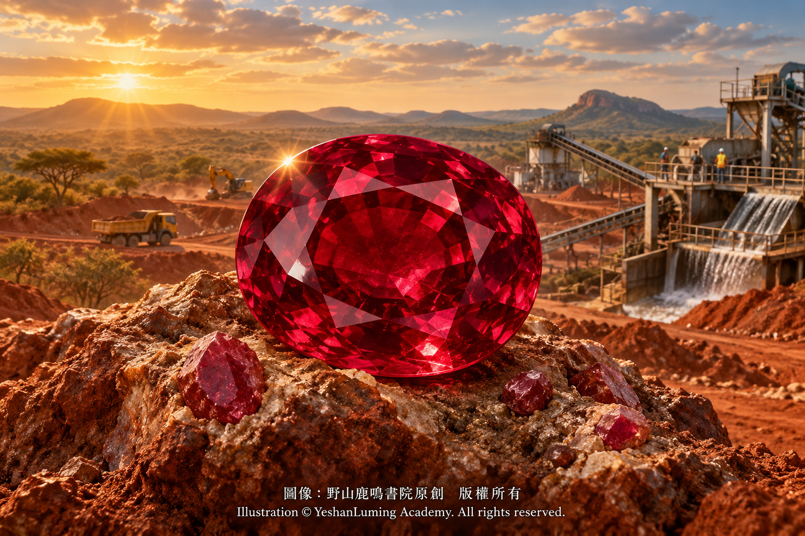

新勢力莫三比克 · 現代紅寶石市場的新秀與穩定基石Mozambique: A New Force · Rising Star and Stable Foundation of the Modern Ruby Market
The World of Gemstones · Ruby SeriesMozambique: A New Force · Rising Star and Stable Foundation of the Modern Ruby Market
The World of Gemstones · Ruby Series新勢力莫三比克 · 現代紅寶石市場的新秀與穩定基石
寶石世界·紅寶石篇
寶石世界·紅寶石篇（105）The World of Gemstones · Ruby Series (105)
如果說緬甸莫谷是端坐在世界紅寶石歷史王座上、帶著神祕面紗的古老君王，那麼莫三比克（Mozambique），無疑是二十一世紀紅寶石舞台上最具顛覆性的現代巨星。
在二〇〇九年以前，如果有人在高級珠寶展上拿出一顆產自非洲的紅寶石，多數頂級藏家可能會不屑一顧。
然而，歷史的轉折點就發生在二〇〇九年前後。在莫三比克東北部德爾加杜角省（Cabo Delgado）蒙特普埃茲（Montepuez）一帶，人們在土壤與岩层中發現了大量紅色剛玉晶體，其中不乏顏色濃豔、晶體碩大、透明度良好的優質紅寶石。
這個消息如同一枚投入深水的炸彈，迅速震動了全球珠寶界。
短短幾年之內，莫三比克紅寶石便以排山倒海之勢進入國際市場，不僅緩解了高品質紅寶石長期供應不足的困境，也逐漸成為眾多國際高級珠寶品牌不可忽視的重要寶石來源。
要理解莫三比克紅寶石的強大，我們首先必須解開它與緬甸莫谷截然不同的「地質血統」。
在上一篇文章中，我們提到，緬甸莫谷紅寶石主要產於大理岩型礦床；莫三比克蒙特普埃茲一帶的紅寶石，則主要與角閃岩及其他變質岩有關，屬於地質背景完全不同的紅寶石礦床。
孕育這些紅寶石的地質活動，可以追溯到大約五億至六億年前的泛非造山運動（Pan-African Orogeny）。當時，古老大陸板塊發生劇烈碰撞與擠壓，在非洲東部形成了規模宏大的變質岩帶。莫三比克北部的紅寶石礦床，正是在這一漫長而複雜的地質演化過程中逐漸形成。
相較於典型的緬甸莫谷大理岩型紅寶石，莫三比克紅寶石通常含有較高的鐵，而鉻仍然是形成紅色的主要致色元素。
不同礦區、不同礦帶，甚至同一礦床中的不同晶體，其鉻與鐵的含量都可能存在明顯差異，因此不能將所有莫三比克紅寶石簡單概括為「高鉻、高鐵」。不過，較高的鐵含量，確實是許多莫三比克紅寶石的重要化學特徵，也是它們與典型莫谷紅寶石在光學表現上產生差異的重要原因之一。
如果說緬甸莫谷是端坐在世界紅寶石歷史王座上、帶著神祕面紗的古老君王，那麼莫三比克（Mozambique），無疑是二十一世紀紅寶石舞台上最具顛覆性的現代巨星。
在二〇〇九年以前，如果有人在高級珠寶展上拿出一顆產自非洲的紅寶石，多數頂級藏家可能會不屑一顧。
然而，歷史的轉折點就發生在二〇〇九年前後。在莫三比克東北部德爾加杜角省（Cabo Delgado）蒙特普埃茲（Montepuez）一帶，人們在土壤與岩层中發現了大量紅色剛玉晶體，其中不乏顏色濃豔、晶體碩大、透明度良好的優質紅寶石。
這個消息如同一枚投入深水的炸彈，迅速震動了全球珠寶界。
短短幾年之內，莫三比克紅寶石便以排山倒海之勢進入國際市場，不僅緩解了高品質紅寶石長期供應不足的困境，也逐漸成為眾多國際高級珠寶品牌不可忽視的重要寶石來源。
要理解莫三比克紅寶石的強大，我們首先必須解開它與緬甸莫谷截然不同的「地質血統」。
在上一篇文章中，我們提到，緬甸莫谷紅寶石主要產於大理岩型礦床；莫三比克蒙特普埃茲一帶的紅寶石，則主要與角閃岩及其他變質岩有關，屬於地質背景完全不同的紅寶石礦床。
孕育這些紅寶石的地質活動，可以追溯到大約五億至六億年前的泛非造山運動（Pan-African Orogeny）。當時，古老大陸板塊發生劇烈碰撞與擠壓，在非洲東部形成了規模宏大的變質岩帶。莫三比克北部的紅寶石礦床，正是在這一漫長而複雜的地質演化過程中逐漸形成。
相較於典型的緬甸莫谷大理岩型紅寶石，莫三比克紅寶石通常含有較高的鐵，而鉻仍然是形成紅色的主要致色元素。
不同礦區、不同礦帶，甚至同一礦床中的不同晶體，其鉻與鐵的含量都可能存在明顯差異，因此不能將所有莫三比克紅寶石簡單概括為「高鉻、高鐵」。不過，較高的鐵含量，確實是許多莫三比克紅寶石的重要化學特徵，也是它們與典型莫谷紅寶石在光學表現上產生差異的重要原因之一。
在前面的文章中，我們反覆提到，鉻不僅賦予紅寶石紅色，也能產生鮮豔的紅色螢光；鐵則會吸收部分光線，削弱鉻所激發的紅色螢光。因此，鐵含量較高的莫三比克紅寶石，通常不會像某些優質莫谷紅寶石那樣，在日光或富含紫外線的光源下爆發出極其強烈的霓虹般紅光。
但是，較高的鐵含量並不只帶來不利影響。
在日常室內光線或紫外線較弱的光源下，許多優質莫三比克紅寶石，反而展現出獨特的視覺魅力。鐵元素在一定程度上收斂了鉻所產生的強烈螢光，使部分紅寶石呈現出近似高級波爾多紅酒般沉穩、濃郁而深邃的紅色。
當然，莫三比克紅寶石的顏色範圍很廣，並非全部都是深沉的紅酒色。其中既有偏紫紅、暗紅或棕紅的晶體，也有少量能夠達到明亮、鮮豔而純正紅色的頂級寶石。因此，產地只能說明一顆紅寶石來自哪裡，不能代替對顏色、透明度、淨度、切工與處理狀況的具體評價。
與許多莫谷紅寶石相比，莫三比克紅寶石的顏色分佈有時更加均勻，某些晶體也較少出現典型莫谷紅寶石中由細密金紅石針與生長結構共同形成的糖蜜狀旋渦。
更重要的是，莫三比克礦區確實有機會產出顆粒較大、透明度較高的紅寶石晶體。國際市場上曾經出現過五克拉、十克拉，甚至更大的優質莫三比克紅寶石。這種大顆粒產出能力，是莫三比克紅寶石能夠迅速征服高級珠寶市場的重要原因之一。
不過，真正兼具鮮豔顏色、高淨度、大體量、良好切工與未經加熱等條件的莫三比克紅寶石，依然十分稀有，也依然價格高昂。它們只是相較於莫谷紅寶石更有機會達到較大的體量，絕不意味著五克拉或十克拉以上、肉眼乾淨的無燒紅寶石在市場上隨處可見。
當莫三比克紅寶石走到耀眼的陽光下，它較高含鐵量所帶來的另一面便顯現出來。由於鐵元素會抑制鉻所激發的紅色螢光，許多莫三比克紅寶石在長波紫外線下只呈現微弱至中等的紅色螢光，無法像某些低鐵、高鉻的莫谷紅寶石那樣，產生強烈而明亮的霓虹感。
然而，較弱的螢光並不妨礙最優質的莫三比克紅寶石進入國際頂級市場。
隨著大量精品莫三比克紅寶石的出現，一些國際寶石實驗室與商業機構逐漸不再把「鴿血紅（Pigeon Blood）」限定於緬甸產地。只要一顆莫三比克紅寶石的主色調、飽和度、明度及整體光學表現符合特定實驗室的判定標準，也可能獲得相應的商業色彩評語。
但是，這裡必須特別提醒讀者：「鴿血紅」並不是一套由全世界寶石實驗室共同採用的統一顏色等級。
不同實驗室對鴿血紅的色相、飽和度、明度、螢光及處理狀況，可能採用不同的判定條件；GIA、GRS以及其他寶石實驗室所使用的報告制度與顏色用語，也不能彼此混為一談。
因此，消費者不能只看到「鴿血紅」三個字便認為所有證書的含義完全相同，更不能認為一顆紅寶石只要得到某種商業顏色名稱，就必然超越所有沒有這種名稱的紅寶石。最終價值仍然要回到寶石本身的顏色、透明度、淨度、重量、切工、是否經過加熱處理，以及證書的具體內容。
莫三比克紅寶石的崛起，除了大自然的餽贈，也離不開現代跨國資本、工業化開採與國際拍賣制度的共同作用。
不同於緬甸莫谷延續千百年的小規模、分散式開採，莫三比克蒙特普埃茲的重要礦區在被發現後不久，便開始由Gemfields與莫三比克當地合作方共同進行大規模、標準化的工業開採。
礦區建立了機械化程度較高的洗選與分級設施。開採出來的紅寶石原石經過清洗、分類與品質評估之後，再送往國際拍賣中心，按照不同品質與用途進行交易。

Click to enlarge
這種更具規模、更有組織，也相對穩定的供應模式，解決了高級珠寶品牌長期面臨的一個重要問題：如何持續獲得數量足夠、顏色接近、大小匹配的紅寶石。
以往，一個高級珠寶系列如果要製作一條由幾十顆顏色相近、大小匹配的紅寶石組成的奢華項鍊，僅僅搜集合適的莫谷紅寶石原料，就可能需要耗費數年時間。
莫三比克相對穩定的工業化產出，增加了高級珠寶品牌獲得成套紅寶石的可能，也使一些過去難以完成的大型珠寶設計逐漸成為現實。從這個角度看，莫三比克紅寶石不僅是一種新興寶石資源，也成為支撐當代國際紅寶石市場的重要力量。
那麼，作為一名GIA GG，在顯微鏡下，我們可以從哪些內含物與化學線索入手，初步理解這位紅寶石「非洲新貴」與「緬甸傳統君王」之間的差異呢？
莫三比克紅寶石的微觀世界，展現出一幅與典型莫谷紅寶石不同的地質圖景。
在顯微鏡下，一些莫三比克紅寶石中雖然也可以見到金紅石針，但通常不像莫谷紅寶石那樣普遍呈現大面積、細密交織的絲絹状結構。莫三比克紅寶石中的金紅石針，有時較短、較粗，分佈也可能較為局部或不規則。
莫三比克紅寶石中一種具有重要參考價值的內含物，是角閃石（Amphibole）晶體。
這些角閃石晶體在顯微鏡下可能呈現灰綠色、深色或近乎黑色，有時為透明至半透明晶體，有時則呈板狀、近扁平狀或不規則多邊形。它們如同一塊塊沉睡在紅色海洋中的非洲暗礁，保留著紅寶石形成環境留下的地質信息。
此外，一些莫三比克紅寶石內部還可以見到雲母（Mica）及其他礦物晶體、癒合裂隙形成的指紋狀包裹體，以及平直或帶有角度的生長色帶。
指紋狀包裹體通常由裂隙在晶體生長或後期地質作用中重新癒合而形成，其中可能含有液體、氣體或細小的固體物質。它們的網狀、羽狀或蕾絲狀結構，在顯微鏡下具有十分豐富的形態。
但是，必須指出，角閃石、雲母、指紋狀包裹體、金紅石針及生長色帶，都不是只會出現在莫三比克紅寶石中的絕對產地標誌。
來自其他產地的紅寶石，也可能出現部分相似的內含物。因此，顯微鏡觀察可以提供重要線索，卻不能僅憑某一種包裹體，便武斷地判定一顆紅寶石必然來自莫三比克。
在現代寶石學產地鑑定中，專業實驗室通常需要把顯微內含物觀察、紫外—可見光吸收光譜、紅外光譜、拉曼光譜、微量元素化學分析，以及實驗室長期建立的產地樣品資料庫結合起來，才能作出較為可靠的判斷。
莫三比克紅寶石作為剛玉的一種，其折射率通常約為1.762至1.770，雙折射率約為0.008至0.010，比重約為4.00。
這些數值可以幫助鑑定者確認寶石的剛玉礦物身分，卻不能單獨用來判斷它是否來自莫三比克，因為不同產地的天然紅寶石具有基本相同的折射率、雙折射率與比重。
在紫外—可見光吸收光譜中，鉻所造成的吸收與紅色透射仍然是紅寶石最重要的光學特徵。較高的鐵含量，則可能加強部分藍紫光區域的吸收，同時削弱紅色螢光。
但是，鐵含量與螢光強弱都會因樣品不同而發生變化，專業鑑定不能只依靠某一條吸收帶，也不能簡單地把「強螢光」等同於緬甸，把「弱螢光」等同於莫三比克。
綜合而言，莫三比克紅寶石具有以下幾項重要的寶石學與市場特徵：
第一，它主要產於與角閃岩及其他變質岩有關的地質環境，與典型莫谷大理岩型紅寶石的地質背景不同。
第二，它通常比典型莫谷紅寶石含有更多的鐵，因此不少樣品的紅色螢光相對較弱，顏色也更顯沉穩、濃郁與深邃。
第三，部分莫三比克紅寶石可以產出較大的晶體，並具有較好的透明度，因而特別適合現代高級珠寶的大體量設計。
第四，其顯微內含物可能包括角閃石、雲母、癒合裂隙形成的指紋狀包裹體、局部分佈的金紅石針，以及平直或帶有角度的生長色帶。
第五，莫三比克紅寶石產地的最終判斷，必須建立在顯微特徵、光譜分析、微量元素化學及參考樣品資料庫相互印證的基礎之上，而不能依靠任何單一現象。
莫三比克紅寶石的出現，是現代彩色寶石歷史上的一場地質、美學與市場革命。
它打破了「紅寶石非緬甸不買」的陳舊觀念，以較大的晶體體量、良好的透明度、穩定的市場供應，以及沉穩而富有力量的紅色，證明了非洲大地同樣可以孕育世界頂級紅寶石。
如果說最優質的緬甸莫谷紅寶石，是歷經千百年追尋仍然可遇而不可求的地質孤品，那麼莫三比克紅寶石，則是現代珠寶藝術、國際拍賣市場與商業收藏中一股強大而不可替代的新生力量。
它不是緬甸紅寶石的廉價替代品，也不需要依靠模仿莫谷才能證明自己的價值。
它以自己的地質血統、自己的光學特徵、自己的體量與色彩，重新書寫了二十一世紀紅寶石市場的版圖。
（未完待續）
If Myanmar’s Mogok is an ancient sovereign seated upon the historic throne of the world’s ruby kingdom, veiled in mystery, then Mozambique is undoubtedly the most disruptive modern superstar to emerge on the twenty-first-century ruby stage.
Before 2009, if someone had presented an African ruby at a high-jewelry exhibition, many leading collectors might have dismissed it with disdain.
Yet the turning point came around 2009. In the Montepuez region of Cabo Delgado Province in northeastern Mozambique, large quantities of red corundum crystals were discovered in the soil and rock formations. Among them were fine rubies of intense color, impressive size, and excellent transparency.
The news struck the global jewelry world like a depth charge detonating beneath the surface.
Within only a few years, Mozambique rubies swept into the international market with overwhelming force. They not only eased the long-standing shortage of high-quality rubies, but also gradually became an important source of gemstones that many international high-jewelry houses could no longer afford to overlook.
To understand the strength of Mozambique rubies, we must first unravel their “geological lineage,” which is entirely different from that of rubies from Mogok, Myanmar.
In the previous article, we explained that Mogok rubies are found primarily in marble-hosted deposits. Rubies from the Montepuez region of Mozambique, by contrast, are principally associated with amphibolite and other metamorphic rocks, placing them within a completely different geological setting.
The geological forces that gave birth to these rubies can be traced back approximately 500 to 600 million years, to the Pan-African Orogeny. During that period, ancient continental plates collided and compressed with tremendous force, creating an immense metamorphic belt across East Africa. The ruby deposits of northern Mozambique gradually took shape through this long and complex process of geological evolution.
Compared with typical marble-hosted rubies from Mogok, Mozambique rubies usually contain more iron, while chromium remains the principal coloring element responsible for their red color.
The concentrations of chromium and iron may vary considerably among different mining districts, different mineralized zones, and even individual crystals from the same deposit. It would therefore be inaccurate to describe all Mozambique rubies simply as “high in chromium and high in iron.” Nevertheless, relatively high iron content is indeed an important chemical characteristic of many Mozambique rubies and one of the principal reasons for the differences in optical appearance between them and typical Mogok rubies.
If Myanmar’s Mogok is an ancient sovereign seated upon the historic throne of the world’s ruby kingdom, veiled in mystery, then Mozambique is undoubtedly the most disruptive modern superstar to emerge on the twenty-first-century ruby stage.
Before 2009, if someone had presented an African ruby at a high-jewelry exhibition, many leading collectors might have dismissed it with disdain.
Yet the turning point came around 2009. In the Montepuez region of Cabo Delgado Province in northeastern Mozambique, large quantities of red corundum crystals were discovered in the soil and rock formations. Among them were fine rubies of intense color, impressive size, and excellent transparency.
The news struck the global jewelry world like a depth charge detonating beneath the surface.
Within only a few years, Mozambique rubies swept into the international market with overwhelming force. They not only eased the long-standing shortage of high-quality rubies, but also gradually became an important source of gemstones that many international high-jewelry houses could no longer afford to overlook.
To understand the strength of Mozambique rubies, we must first unravel their “geological lineage,” which is entirely different from that of rubies from Mogok, Myanmar.
In the previous article, we explained that Mogok rubies are found primarily in marble-hosted deposits. Rubies from the Montepuez region of Mozambique, by contrast, are principally associated with amphibolite and other metamorphic rocks, placing them within a completely different geological setting.
The geological forces that gave birth to these rubies can be traced back approximately 500 to 600 million years, to the Pan-African Orogeny. During that period, ancient continental plates collided and compressed with tremendous force, creating an immense metamorphic belt across East Africa. The ruby deposits of northern Mozambique gradually took shape through this long and complex process of geological evolution.
Compared with typical marble-hosted rubies from Mogok, Mozambique rubies usually contain more iron, while chromium remains the principal coloring element responsible for their red color.
The concentrations of chromium and iron may vary considerably among different mining districts, different mineralized zones, and even individual crystals from the same deposit. It would therefore be inaccurate to describe all Mozambique rubies simply as “high in chromium and high in iron.” Nevertheless, relatively high iron content is indeed an important chemical characteristic of many Mozambique rubies and one of the principal reasons for the differences in optical appearance between them and typical Mogok rubies.
As we have repeatedly discussed in earlier articles, chromium not only gives ruby its red color, but can also produce vivid red fluorescence. Iron, on the other hand, absorbs certain wavelengths of light and weakens the red fluorescence excited by chromium. Consequently, Mozambique rubies with higher iron content usually do not erupt with the extraordinarily intense, neon-like red glow displayed by some exceptional Mogok rubies under daylight or ultraviolet-rich illumination.
Higher iron content, however, does not bring only disadvantages.
Under ordinary indoor lighting or light sources with relatively little ultraviolet radiation, many fine Mozambique rubies instead reveal a distinctive visual appeal. To some degree, iron restrains the powerful fluorescence produced by chromium, giving certain rubies a composed, rich, and profound red resembling that of a fine Bordeaux wine.
Mozambique rubies, of course, occur in a broad range of colors, and not all possess a deep wine-red appearance. Some crystals are purplish red, dark red, or brownish red, while a small number of exceptional stones attain a bright, vivid, and pure red. Geographic origin therefore tells us only where a ruby came from; it cannot replace a specific evaluation of its color, transparency, clarity, cut, and treatment status.
Compared with many Mogok rubies, Mozambique rubies sometimes display a more even distribution of color. Certain crystals also show fewer of the treacle-like swirls created in typical Mogok rubies by fine rutile needles interacting with their growth structures.
More importantly, the deposits of Mozambique are genuinely capable of producing comparatively large ruby crystals with excellent transparency. Fine Mozambique rubies weighing five carats, ten carats, and even more have appeared on the international market. This capacity to yield large stones is one of the major reasons Mozambique rubies were able to conquer the high-jewelry market so rapidly.
Nevertheless, Mozambique rubies that combine vivid color, high clarity, substantial size, fine cutting, and an absence of heat treatment remain exceedingly rare and command very high prices. Compared with Mogok rubies, they merely have a greater chance of attaining larger sizes; this certainly does not mean that unheated, eye-clean Mozambique rubies weighing five or ten carats or more can be found everywhere in the marketplace.
When Mozambique rubies are brought into brilliant sunlight, the other side of their higher iron content becomes apparent. Because iron suppresses the red fluorescence excited by chromium, many Mozambique rubies display only weak to moderate red fluorescence under long-wave ultraviolet light. They cannot produce the intense, luminous neon effect seen in certain low-iron, high-chromium Mogok rubies.
Yet weaker fluorescence has not prevented the finest Mozambique rubies from entering the highest levels of the international market.
As large numbers of fine Mozambique rubies began to appear, some international gemological laboratories and commercial organizations gradually ceased limiting the designation “Pigeon Blood” exclusively to stones of Myanmar origin. If the dominant hue, saturation, tone, and overall optical appearance of a Mozambique ruby satisfy the criteria of a particular laboratory, it may also receive a corresponding commercial color description.
Readers must be clearly reminded, however, that “Pigeon Blood” is not a standardized color grade universally adopted by gemological laboratories throughout the world.
Different laboratories may apply different criteria concerning hue, saturation, tone, fluorescence, and treatment status when determining whether a ruby qualifies as pigeon blood. The reporting systems and color terminology used by GIA, GRS, and other gemological laboratories must not be treated as interchangeable.
Consumers should therefore never assume that the words “Pigeon Blood” carry exactly the same meaning on every laboratory report. Nor should they conclude that a ruby bearing a particular commercial color designation must necessarily surpass every ruby that does not. Its ultimate value must still be determined by the gemstone itself—its color, transparency, clarity, weight, cut, treatment status, and the precise information stated on its laboratory report.
The rise of Mozambique rubies was made possible not only by nature’s extraordinary gift, but also by the combined forces of modern multinational capital, industrialized mining, and international auction systems.
Unlike the small-scale and dispersed mining operations that have continued in Mogok for centuries, the major ruby deposits of Montepuez began to be mined on a large and standardized industrial scale by Gemfields and its local Mozambican partner soon after their discovery.
The mining area established highly mechanized washing, sorting, and grading facilities. After extraction, the rough rubies are washed, classified, and evaluated for quality before being sent to international auction centers, where they are traded according to their different qualities and intended uses.
Click to enlarge
This larger, better-organized, and relatively stable supply model addressed a long-standing challenge faced by high-jewelry houses: how to obtain a continuing supply of rubies in sufficient quantities, with closely matched colors and sizes.
In the past, if a high-jewelry collection required a magnificent necklace composed of dozens of rubies matched in color and size, merely assembling suitable Mogok material might have taken many years.
Mozambique’s comparatively stable industrial output has increased the possibility that high-jewelry houses can acquire matched suites of rubies. It has also gradually made possible certain large-scale jewelry designs that would once have been extraordinarily difficult to complete. From this perspective, Mozambique ruby is not merely a newly emerged gem resource; it has also become an important force supporting the contemporary international ruby market.
Then, as a GIA GG, what inclusions and chemical clues can we examine under the microscope to gain an initial understanding of the differences between this ruby world’s “African newcomer” and its “traditional Myanmar sovereign”?
The microscopic world of Mozambique ruby reveals a geological landscape distinctly different from that of typical Mogok ruby.
Although rutile needles can be observed in some Mozambique rubies, they generally do not form the extensive, densely interwoven silk-like structures so commonly associated with Mogok rubies. Rutile needles in Mozambique rubies may sometimes be shorter and coarser, and their distribution may be more localized or irregular.
One inclusion of considerable diagnostic interest in Mozambique ruby is amphibole crystal.
Under the microscope, these amphibole crystals may appear grayish green, dark, or nearly black. They may be transparent to translucent, and can take the form of plates, flattened crystals, or irregular polygons. Like dark African reefs sleeping beneath a red sea, they preserve geological information about the environment in which the ruby was formed.
Some Mozambique rubies may also contain mica and other mineral crystals, fingerprint inclusions formed by healed fissures, and straight or angular growth banding.
Fingerprint inclusions are generally created when fissures heal during crystal growth or through later geological processes. They may contain liquids, gases, or minute solid materials. Under the microscope, their net-like, feather-like, or lace-like structures can assume an extraordinarily rich variety of forms.
It must be emphasized, however, that amphibole, mica, fingerprint inclusions, rutile needles, and growth banding are not absolute origin markers found only in Mozambique rubies.
Rubies from other geographic sources may contain some similar inclusions. Microscopic examination can therefore provide important clues, but no ruby should be arbitrarily declared to originate from Mozambique solely because it contains one particular type of inclusion.
In modern gemological origin determination, professional laboratories generally combine microscopic inclusion analysis, ultraviolet-visible absorption spectroscopy, infrared spectroscopy, Raman spectroscopy, trace-element chemical analysis, and extensive reference collections of samples from known deposits before reaching a reasonably reliable conclusion.
As a variety of corundum, Mozambique ruby usually has a refractive index of approximately 1.762 to 1.770, birefringence of approximately 0.008 to 0.010, and a specific gravity of approximately 4.00.
These values can help a gemologist confirm that the stone belongs to the corundum mineral species, but they cannot independently establish that it came from Mozambique, because natural rubies from different geographic sources possess essentially the same refractive index, birefringence, and specific gravity.
In the ultraviolet-visible absorption spectrum, chromium-related absorption and the transmission of red light remain the most important optical features of ruby. Higher iron content may strengthen absorption in parts of the blue-violet region while simultaneously weakening red fluorescence.
Iron content and fluorescence intensity, however, vary from one specimen to another. Professional origin determination cannot rely on a single absorption band, nor can it simply equate “strong fluorescence” with Myanmar and “weak fluorescence” with Mozambique.
Taken as a whole, Mozambique rubies possess the following important gemological and market characteristics:
First, they occur primarily in geological environments associated with amphibolite and other metamorphic rocks, which differ from the marble-hosted geological setting of typical Mogok rubies.
Second, they usually contain more iron than typical Mogok rubies. As a result, many specimens display comparatively weaker red fluorescence, while their color may appear more composed, rich, and profound.
Third, certain Mozambique deposits can produce relatively large ruby crystals with excellent transparency, making them especially suitable for large-scale designs in modern high jewelry.
Fourth, their microscopic inclusions may include amphibole, mica, fingerprint inclusions formed by healed fissures, locally distributed rutile needles, and straight or angular growth banding.
Fifth, a final determination of Mozambique origin must be based on the mutual confirmation of microscopic characteristics, spectroscopic analysis, trace-element chemistry, and reference samples of known origin. It cannot rely upon any single phenomenon.
The emergence of Mozambique ruby represents a geological, aesthetic, and commercial revolution in the history of modern colored gemstones.
It shattered the outdated belief that no ruby was worth buying unless it came from Myanmar. Through its capacity for larger crystals, excellent transparency, stable market supply, and deep, dignified, and powerful red color, Mozambique has demonstrated that the African earth is equally capable of producing world-class rubies.
If the finest Mogok rubies of Myanmar are geological treasures that remain elusive even after centuries of pursuit, then Mozambique rubies are a powerful and irreplaceable new force in modern jewelry art, the international auction market, and commercial collecting.
They are not inexpensive substitutes for Myanmar rubies, nor do they need to imitate Mogok in order to prove their worth.
With their own geological lineage, their own optical character, their own impressive dimensions, and their own distinctive colors, they have redrawn the map of the twenty-first-century ruby market.
(To be continued)